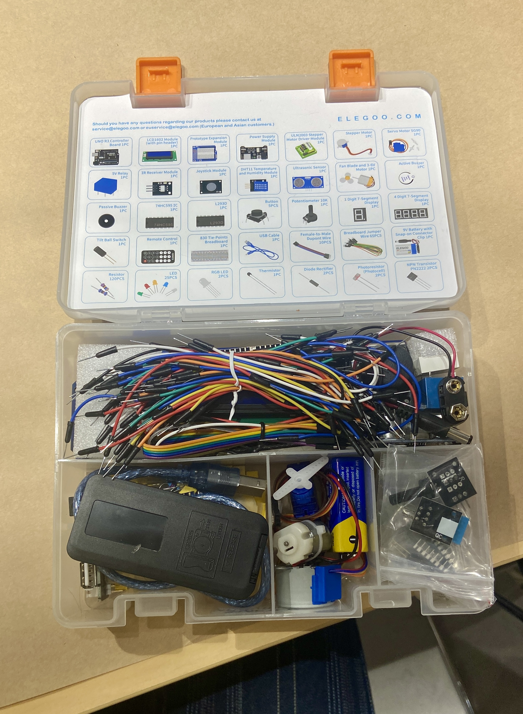
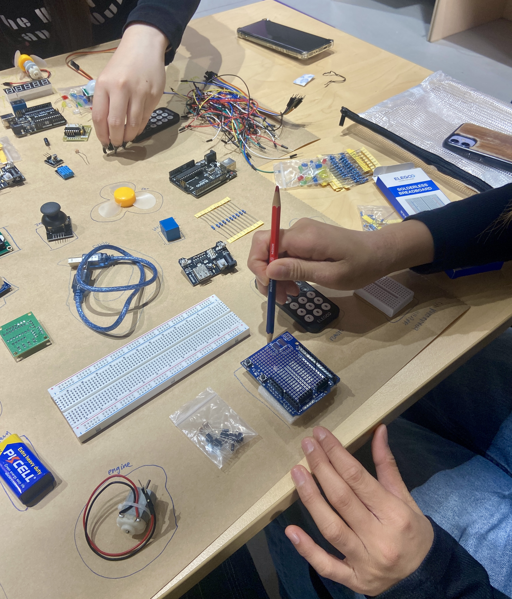
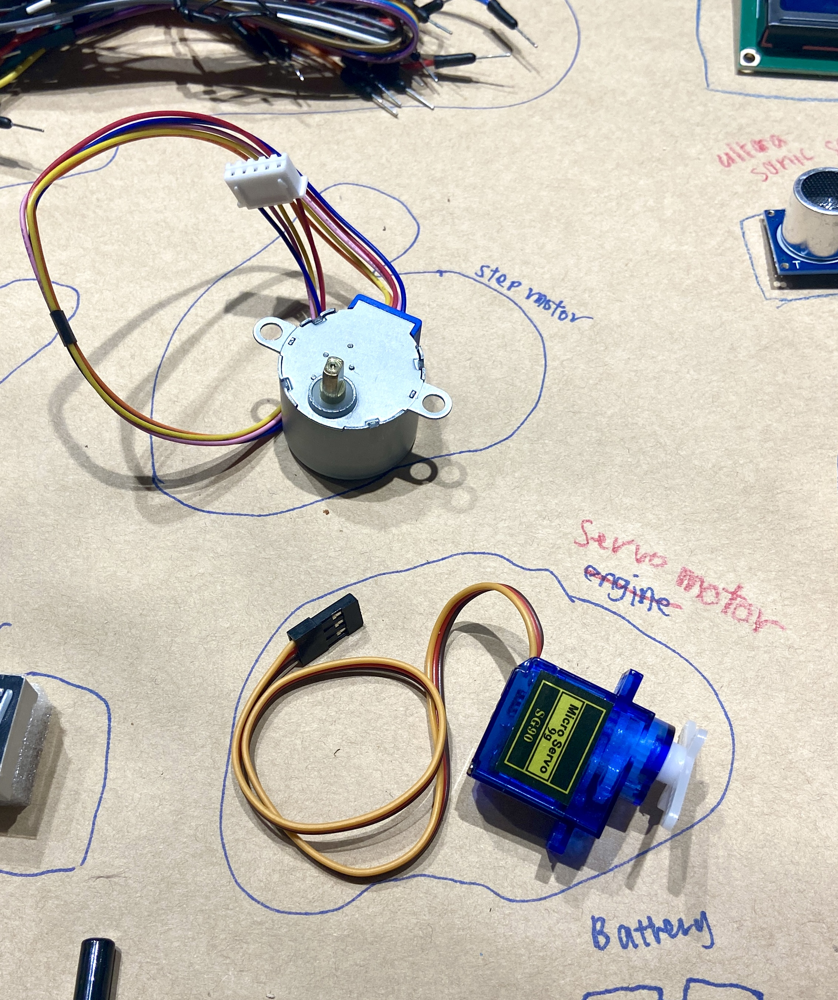
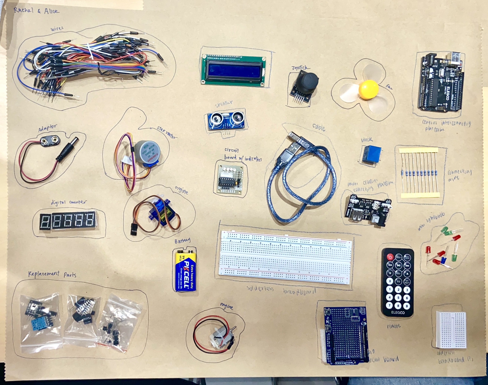

This week was the first dive into physical computing. We got to play with parts and make initial guesses based on intuition. I found it interesting how my assumption often strayed far from the actual function of the parts - for example, I thought the potentiometer was a kind of volume control, and the photoresistor was a light source. But there were also close misses where I was in the right direction but lacked specificity - e.g. engine for servo motor.

There were a lot of unexpected challenges in setting up the arduino and understanding the routing on the breadboard - I had to ask for help a few times to get the circuit working.

I enjoyed the tactile aspect of physical computing and found it similar to coding in the way that I had to walk my brain through the logic of how the circuit worked, and imagine myself as an electron moving through the circuit.

